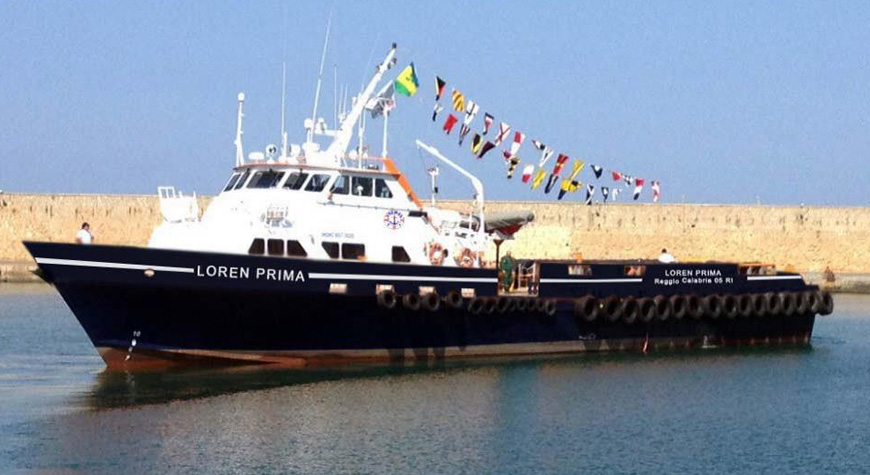

PROGETTO IN EVIDENZA
Loren Prima
Polaris Maritime Consulting ha fornito l'equipaggio per il trasferimento della crew boat Loren Prima da Crotone a Port Harcourt, in Nigeria. Un incarico realizzato grazie alla fiducia di First Priority Resources International Ltd.